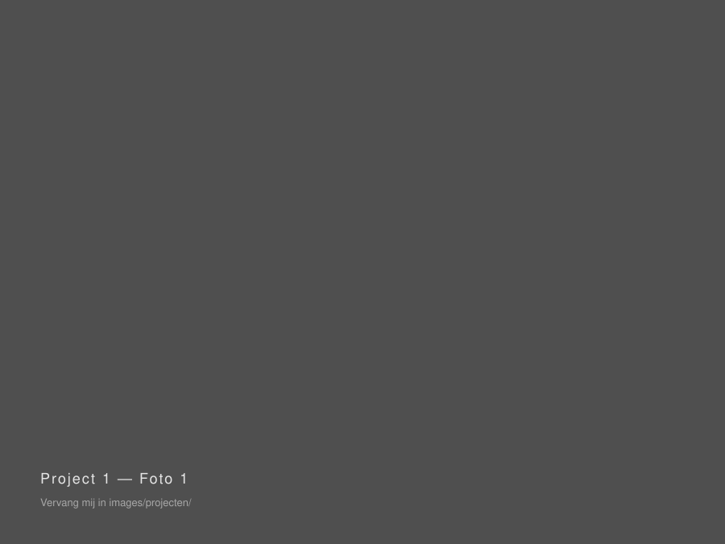
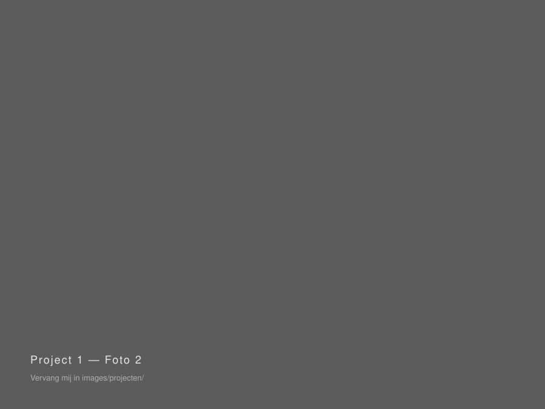
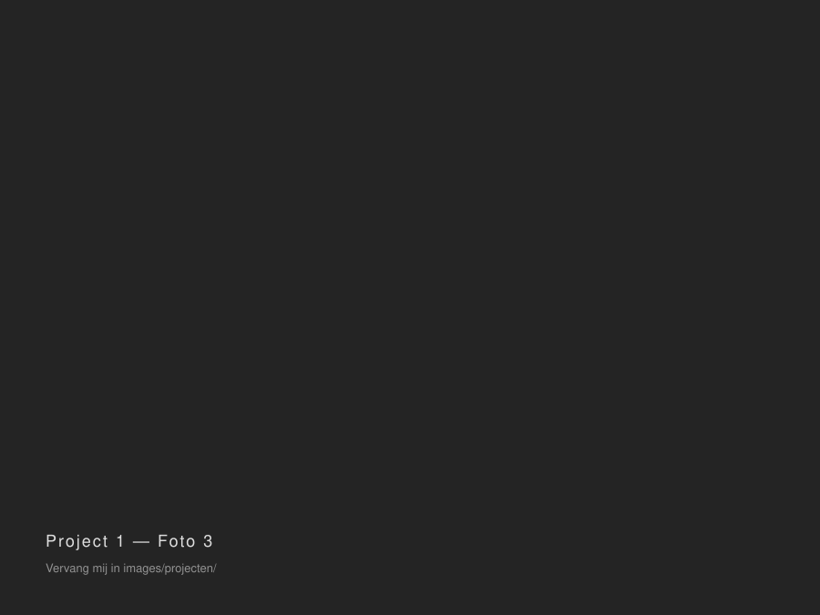

Korte omschrijving van dit project: wat was de vraag, wat heb je gemaakt, en voor wie.
Vertel hier uitgebreider over dit project. Wat was de opdracht, hoe ben je te werk gegaan, en welke keuzes heb je gemaakt?
Voeg gerust een tweede alinea toe over het eindresultaat of wat je hebt geleerd tijdens dit project.


